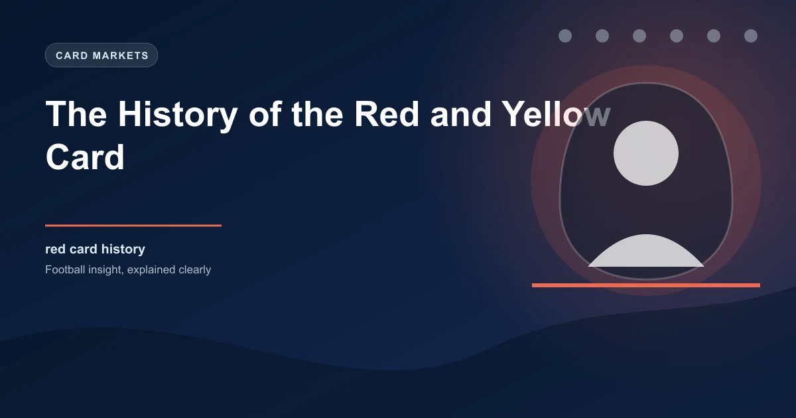

Every football fan knows what a red card means. Every fan flinches at the sight of a yellow. But before 1970, football had no visual card system at all. Referees communicated disciplinary decisions through verbal warnings and gestures that were often lost in the roar of the crowd.
The man who changed that was an English referee named Ken Aston, and his?? came from an unlikely source: a traffic light.
Before cards existed, referees used a complicated system of hand signals and verbal warnings to communicate with players. A yellow card equivalent was a verbal caution, and a red card equivalent was a verbal sending-off. But in noisy stadiums filled with 60,000 or more spectators, players, coaches, and fans often had no idea what had been communicated.
The 1966 World Cup final made the problem painfully clear. England's Alf Ramsey had to physically restrain his players from confronting the referee after several controversial decisions. The referee's signals were invisible to most of the stadium, creating confusion and anger.
The 1970 World Cup in Mexico was approaching, and FIFA needed a solution that would be visible to everyone in the stadium and to television audiences worldwide.
Ken Aston was a retired English football referee who had served on FIFA's Referees Committee. After the chaos of the 1966 World Cup, he began thinking about how to make disciplinary decisions visible to everyone.
The story goes that Aston was sitting in his car at a traffic light in London when the idea struck him. Red means stop. Yellow means caution. It was simple, universal, and would work across every language barrier in international football.
Aston took his idea to FIFA, and it was approved for the 1970 World Cup in Mexico. The system was straightforward: a yellow card for a caution, a red card for a sending-off. The cards were made from plastic, roughly the size of a playing card, and were held by the referee during matches.
Ken Aston was also the referee who introduced the concept of adding extra time at the end of matches. He was inspired by a kitchen timer that his wife had given him, which he used to track time during a match.
The card system debuted at the 1970 World Cup in Mexico. The first player to receive a yellow card in World Cup history was Argentina's Carlos Caszely, during their group stage match against Bulgaria on June 2, 1970.
The first red card in World Cup history came later in the same tournament, when Peru's Luis Cubillas was sent off during their match against Bulgaria. These early uses proved that the system worked: everyone in the stadium could see the cards, and television cameras captured them clearly.
The 1970 World Cup was also the first to be broadcast live to a global television audience, which meant the card system was seen by millions of people simultaneously. This helped establish the cards as a universal symbol of football discipline.
Before cards, referees had to make split-second decisions while also communicating those decisions clearly. The cards freed referees from having to explain every decision verbally. A quick flash of yellow or red communicated everything.
This changed referee behavior in subtle ways. Referees became more confident in issuing cautions because they knew the visual signal would be understood. Players became more cautious because they could see exactly where they stood in terms of discipline.
The cards also made it easier for spectators to follow the game. Before cards, you might not know a player had been cautioned until the commentator mentioned it. Now, the yellow card was visible from any seat in the stadium.
The basic yellow and red card system has remained largely unchanged since 1970, but the rules governing when cards are shown have evolved significantly.
Two yellow cards leading to a red card (and ejection) became a standard rule, meaning a player who receives two cautions in the same match is sent off. This was adopted quickly after the 1970 World Cup and remains in place today.
The introduction of VAR in 2018 added another dimension. Referees can now be advised to show cards after reviewing incidents on video. This has led to more red cards being shown for incidents that referees might have missed in real time, particularly for violent conduct and serious foul play.
| Year | Development | Significance |
|---|---|---|
| 1970 | Cards introduced at World Cup | First global use of visual discipline system |
| 1970s | Two yellows = red rule standardized | Added consequence for repeated cautions |
| 1990s | Stricter enforcement of violent conduct | More red cards for off-the-ball incidents |
| 2018 | VAR introduced | Referees can review incidents for cards |
| 2020s | Semi-automated tracking | Faster reviews for card decisions |
The card system has produced some of football's most dramatic moments. Zinedine Zidane's red card in the 2006 World Cup final, after he headbutted Marco Materazzi, is perhaps the most famous sending-off in history. David Beckham's red card against Argentina in the 1998 World Cup, for kicking out at Diego Simeone, changed the course of England's tournament.
Thierry Henry's handball against Ireland in 2009, which led to France's World Cup qualification goal, didn't result in a card but sparked massive debate about the role of VAR in card decisions. Edgar Davids' multiple red cards throughout his career made him one of the most cautioned players in top-level football.
Premier League data shows that the average number of yellow cards per match has remained relatively stable at around 3�4 per game since the 1990s. Red cards average about 0.2�0.3 per match, meaning roughly one sending-off every three to four games.
However, the distribution of cards has changed. More cards are now shown for tactical fouls, handballs, and dissent than in previous decades. The modern game's speed and physicality mean that referees must make more split-second decisions about card-worthiness.
When a team receives a red card, their chances of winning drop significantly. Statistical analysis shows that a team playing with 10 men wins approximately 25% of the time, draws 30%, and loses 45%. This is reflected instantly in live betting markets when a red card is shown.
Research has shown that receiving a yellow card changes player behavior. Players who are on a yellow tend to be more cautious in tackles, which can affect the intensity of a match. This "yellow card effect" is well-documented in football analytics.
Conversely, some players use the threat of a yellow card as a tactical weapon. A well-timed tactical foul that results in a yellow card can be worth the sacrifice if it prevents a dangerous attack. The calculation of whether a yellow is worth committing has become part of modern tactical analysis.
Ken Aston's traffic light moment gave football one of its most enduring symbols. The yellow and red cards are recognized worldwide, transcending language barriers and cultural differences. They've been adopted by virtually every sport that has a referee, from rugby to basketball to hockey.
What started as a solution to a communication problem at the 1970 World Cup has become an integral part of how football is played, watched, and analyzed. And it all began with a retired referee sitting at a red light, thinking about how to make the game fairer.
Check our free daily football predictions for every match of the season.
Generate optimized accumulator combinations from today's AI-powered predictions. Set your target odds and get instant ticket suggestions.
Free Ticket Builder →Catch live matches as they happen. Get golden tips and in-play alerts.
In-Play Tips